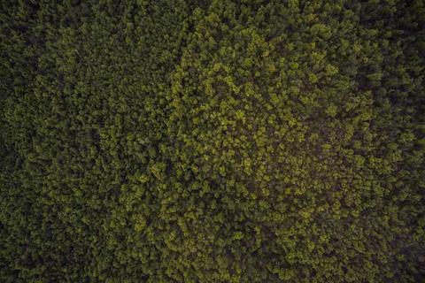

Hauser & Wirth Now Represents Ser Serpas, Fast-Rising Artist Who Combs the Detritus of Everyday Life
来源：ARTnews

Smithsonian Head Assures Staff of Independence After Glimpse of White House Overhaul Plan
来源：ARTnews


Supreme x The North Face 2026 秋季「Bones」联乘系列发布
来源：Hypebeast

OMEGA x Swatch 推出全新「SILVER SNOWFLAKE」MoonSwatch 腕表
来源：Hypebeast

With MoMA, M+, and the Centre Pompidou's Alliance, Museums Enter a New Era of Collaboration
来源：ARTnews

Nike 与高桥盾正式宣布 GYAKUSOU 归来
来源：Hypebeast



Labubu 如何避免成为下一个 BE@RBRICK？
来源：HB·POPMART
POP MART x UNIQLO UT 最新联名系列「The Monsters」发布
来源：HB·POPMART
THE MONSTERS 森林秘密基地登陆杭州嘉里中心
来源：HB·POPMART
POP MART 释出全新 MEGA SPACE MOLLY 1000% RX-78-2 高达特别版
来源：HB·POPMART
走进 POP MART 成都「炉火纯青·燃」特别活动
来源：HB·POPMART
国内首个线上潮玩生态展，泡泡玛特举办虚拟潮玩艺术周
来源：HB·POPMART
KAWS:HOLIDAY 落地杭州西湖：30 米机器人 COMPANION 卧赏中秋月
来源：HB·KAWS
Sponsored Content
来源：ARTnews
Warhol’s Watches
来源：ARTnews
What Is Internet Cinema?
来源：ARTnews
Browse the Top 200
来源：ARTnews
Under the Influence
来源：Artforum
After the Museum
来源：Artforum
Fiona Connor’s Charred Shadows
来源：Artforum
Fake Wade Guyton Work Pulled from Sotheby’s Sale
来源：Artforum
From the Archive: Andrea Fraser
来源：Artforum
Literalism: Art’s Deadest End
来源：Artforum